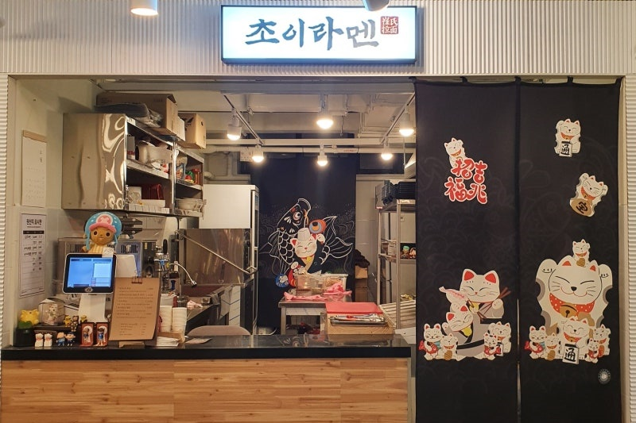
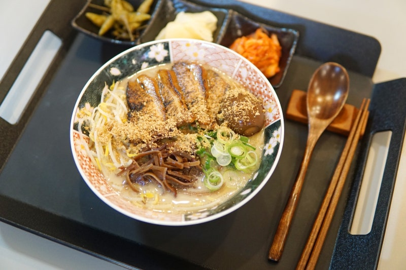
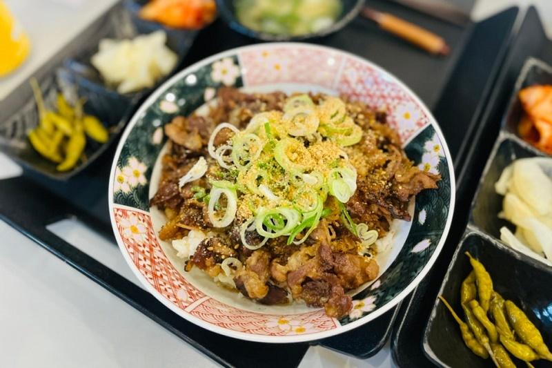

초이라멘
신안코아 청년몰 숨은 맛집

이번에도 정말 오랜만의 포스팅! ⭐
해장으로 끝내주는 초이 라멘 후기 작성해요 !신안코아에 청년몰이라고 해서
청년분들이 모여서 장사를 하시는 것 같았어요!
안에 오목조목 자그마하게 매장들이 있었고
맛있어 보이는 가게들이 많아서 고민을 좀 했어요
저는 매운라면이 당기더라고요~
그래서 고민도 없이 저는 "초이라멘" 으로 pick!
대표 메뉴

돈코츠 라멘
가격 : 8,000난 왜 과거에 초이라멘을 먹지않았던것인가
육수가 굉장히 깊은맛이라 배불러도 계속 손가는 맛에
숙주 + 면의 조합을 좋아하는 나인데 숙주 많아서 더욱좋았고
라멘을 좋아하지 않아서 저 갈색깔의 꼬독꼬독한건 뭔지 모르겠지만
이식감이 굉장히 좋았다
고기는 젓가락으로 잡으면 으스라질정도에 말랑함이라
입안에서 녹는게 좋았다 굿
대표 메뉴 2

야끼니꾸 덮밥
가격 : 9,000사실 야끼니꾸 덮밥은 기대를 별로 안 했거든요?
근데 너무 먹음직스러운 비주얼에 깜짝 놀랐어요 ㄷㄷ
특제 간장소스로 구운 우삼겹이 듬뿍 올라간
야끼니꾸 덮밥은 냄새부터 장난 아니었다 ..
불 맛이 진짜 장난 아니에요
덮밥과 함께 산고추절임, 단무지, 김치 그리고 뜨끈한 장국까지
딱 한 끼 식사하기 좋은 한상차림 ~
위치정보 및 리뷰
영업 시간
매일 11 : 00 ~ 21 : 00네티즌 리뷰
bvc**** : 분위기 너무 좋구 음식도 담백해요 ! / ⭐⭐⭐⭐qaa**** : 산책중 배고파서 들렸는데 너무 좋았습니다 / ⭐⭐⭐⭐
nw3**** : 음식도 정갈하고 맛있었어요 , 분위기도 너무 좋았아요 / ⭐⭐⭐⭐⭐
jha**** : 여자친구랑 여러번 방문했는데 갈때마다 맛있었습니다 / ⭐⭐⭐⭐
952**** : 하나하나 빠짐없이 너무 너무 맛있게 먹었습니다 ! / ⭐⭐⭐⭐⭐
-
MAINPAGE
더 많은 맛집 정보를 찾아보세요